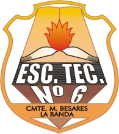
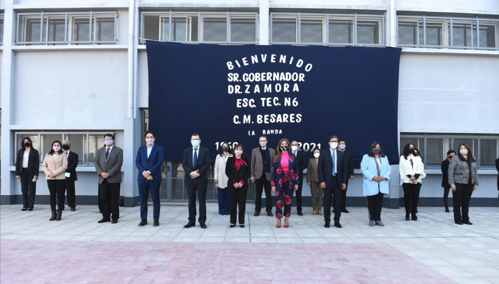

Gestión de Empresas
Para quienes quieren entender cómo funciona una organización: administración, organización del trabajo, contabilidad y emprendimientos.

E.T. N° 6 BesaresSecundario técnico de seis años en La Banda, Santiago del Estero. Estudiás una orientación y aprendés haciendo, también en contraturno.
Nuestra comunidad
Un espacio para aprender, compartir y construir el futuro.
.jpg)
.jpg)
.jpg)
.jpg)

Para quienes quieren entender cómo funciona una organización: administración, organización del trabajo, contabilidad y emprendimientos.
Para quienes quieren trabajar con computadoras: armado y mantenimiento de equipos, programación, redes y uso profesional de software.
Los contenidos de cada materia pueden cambiar según el plan de estudios vigente. Consultá en secretaría por el plan completo.
Además de las clases del turno, los estudiantes cursan talleres y prácticas en contraturno.
| Si cursás en el turno | Tu contraturno es |
|---|---|
| Mañana | de 14:00 a 18:00 hs |
| Tarde | de 7:45 a 12:00 hs |
Para los horarios de clases de cada año, consultá en la escuela.
La Escuela Técnica N° 6 “Comandante Manuel Besares” funciona en la ciudad de La Banda, provincia de Santiago del Estero. Es una institución comprometida con el aprendizaje y el desarrollo de sus estudiantes.
Teléfono
03854 272246
Correo
tecnica6@educ.ar
Dirección
Jerónimo Rebotaron 650,
La Banda, Santiago del Estero